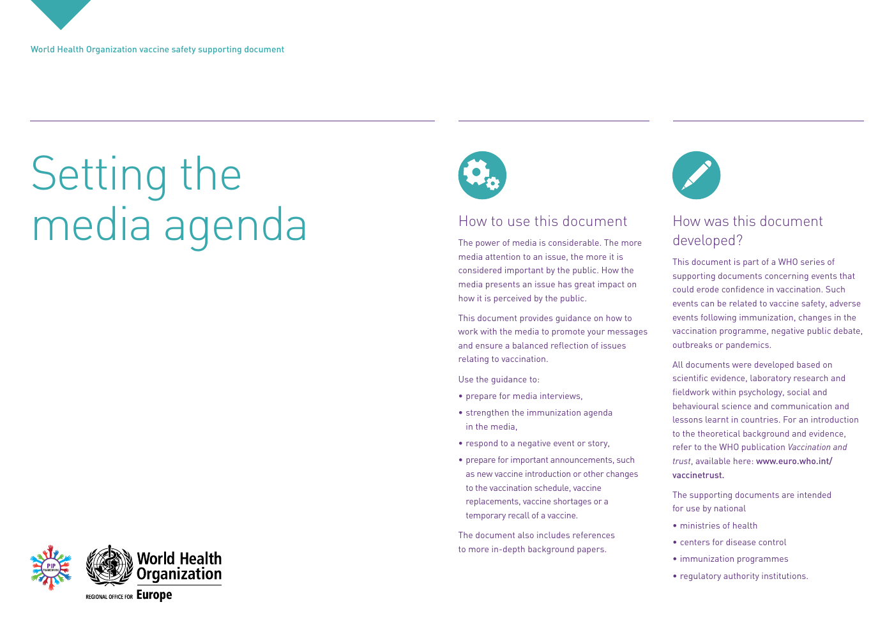
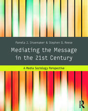

34:25 · 5 OPERE
Come impostare la programmazione dei media?
Il filo del discorso
Dr Divago legge e commenta un documento OMS del 2017 dedicato ai rapporti con i media nella comunicazione sulle vaccinazioni. Il suo punto di partenza è una domanda sull’autonomia del pubblico: quanto la scelta degli argomenti e del modo di presentarli orienta ciò che viene ritenuto importante? Il relatore interpreta il linguaggio della fiducia, della reputazione e del dibattito negativo come un tentativo di sostituire il ragionamento con l’adesione. Distingue informazione e istruzione, poi applica questa critica alla comunicazione della pandemia. Il percorso comprende un’analogia con Pavlov, l’esempio di una stufa e un aneddoto sullo sciamano che farebbe sorgere il sole. Seguono digressioni su mascherine, poliomielite, permafrost, responsabilità individuale e rapporto fra terapie e vaccini. Tornando al documento, Dr Divago si concentra sulla relazione con i giornalisti, sull’identificazione emotiva e sul richiamo continuo alla novità. La bibliografia finale apre un confronto con gli studi sull’agenda pubblica, sull’inquadramento delle notizie e sulla sociologia dei media, accostati alla formula di McLuhan sul mezzo e il messaggio. Gli esempi delle confezioni pubblicitarie e dei pantaloni strappati conducono alla conclusione polemica: per il relatore, tecniche di vendita trasferite alla politica possono deformare la vita democratica. La scheda conserva questa interpretazione senza trasformarla in un’accusa accertata, e distingue le analogie retoriche dalle dimostrazioni epidemiologiche.
I libri nel discorso

Setting the media agenda: World Health Organization vaccine safety supporting document
Prima pagina del documento OMS: PRIMA PAGINA INTEGRALE del documento inglese OMS, 2017, quattro pagine, numero WHO/EURO:2017-2900-42658-59428. Il PDF corrente riporta copyright 2017 e metadati aggiornati nel 2023. Rendering della pagina originale, non copertina di un libro.
Prima pagina ricavata dal PDF ufficiale, integralmente e senza aggiunte; testo e marchio OMS visibili.
Titolo inglese esplicito e commento esteso del documento OMS 2017.
Passaggio 1:23 ↗ · Fonti e libro ↗How the News Shapes Our Civic Agenda
Copertina della raccolta Media Effects: COPERTINA DELLA RACCOLTA Media Effects: Advances in Theory and Research, terza edizione, a cura di Jennings Bryant e Mary Beth Oliver, Routledge 2009, xv,640 pagine, ISBN 9780805864502. Il capitolo è alle pagine 1–16. Copertina verde e nera con nodi e collegamenti arancioni, titolo, curatori e indicazione Third Edition; non copertina del solo capitolo.
Copertina della raccolta della terza edizione, 2009; capitolo alle pagine 1–16, non libro autonomo.
Il titolo è tradotto come le notizie modificano la nostra programmazione civica; riscontro nella bibliografia I del documento OMS.
Passaggio 28:52 ↗ · Fonti e libro ↗News Framing Theory and Research
Copertina della raccolta Media Effects: COPERTINA DELLA RACCOLTA Media Effects: Advances in Theory and Research, terza edizione, a cura di Jennings Bryant e Mary Beth Oliver, Routledge 2009, xv,640 pagine, ISBN 9780805864502. Il capitolo è alle pagine 17–33. Copertina verde e nera con nodi e collegamenti arancioni, titolo, curatori e indicazione Third Edition; non copertina del solo capitolo.
Copertina della raccolta della terza edizione, 2009; capitolo alle pagine 17–33, non libro autonomo.
News Framing Theory and Research esplicitamente letto nella bibliografia II.
Passaggio 29:12 ↗ · Fonti e libro ↗
Mediating the Message in the 21st Century: A Media Sociology Perspective
Copertina: Routledge 2014, ISBN 9780415989145, xix,287 pagine secondo il catalogo bibliotecario, 308 pagine complessive nella scheda editoriale. Terza edizione della linea Mediating the Message, registrata anche come prima edizione del nuovo titolo. Copertina con barre verticali colorate, titolo e autori.
Immagine autentica dell’opera, controllata visivamente; l’edizione di riferimento non è attribuita al filmato.
Titolo tradotto come Mediare il messaggio nel ventunesimo secolo; riscontro nella bibliografia IV.
Passaggio 29:54 ↗ · Fonti e libro ↗
Gli strumenti del comunicare (Understanding Media)
Identificazione probabile
Copertina: Il Saggiatore, 2023, traduzione di Ettore Capriolo; opera originale del 1964.
Immagine autentica dell’opera, controllata visivamente; l’edizione di riferimento non è attribuita al filmato.
McLuhan e formula il mezzo è il messaggio: opera di provenienza probabile, titolo non pronunciato.
Passaggio 30:14 ↗ · Fonti e libro ↗